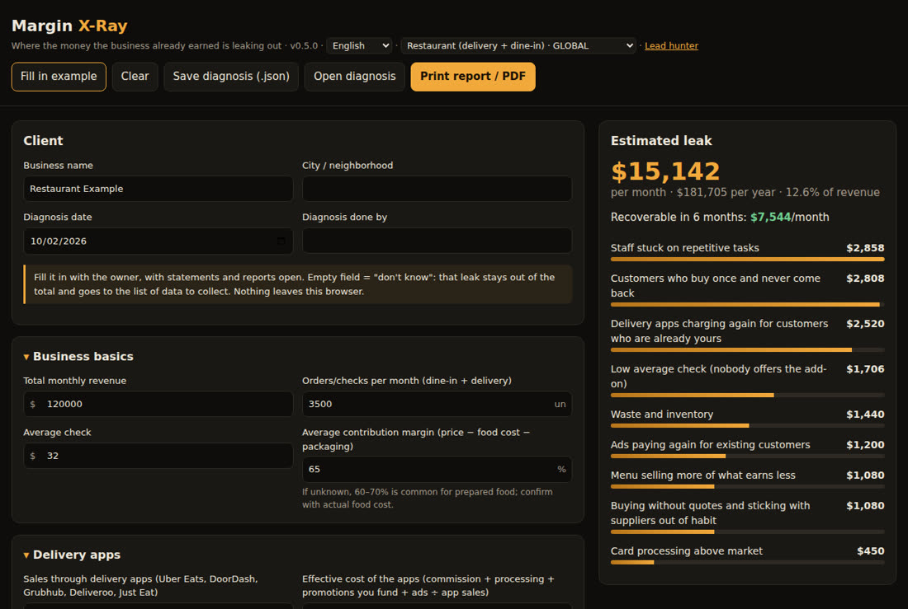
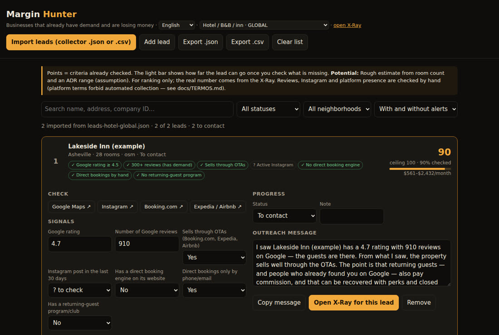

Don't sell AI or another app. Show the owner, in dollars, what is leaking out, fix it and prove what came back. A lead hunter built on open data, an X-Ray with a PDF report, fix playbooks and measurement — all in the browser, nothing to install.
The question stops being "do you need AI?" and becomes "where is the money you already earned going?". The kit covers the whole path, from first lead to monthly retainer.
Lists the businesses in a city or neighborhood from open data (OpenStreetMap anywhere, plus your country's business registry as a CSV), reads each one's own website and scores who already has demand and is leaking money. Writes the outreach message for you.
Filled in with the owner in 40 minutes: prices each leak in $/month (as lost margin, not revenue), ranks them from quickest to hardest fix and prints the report "you are leaving $X on the table every month".
For every leak, a fix guide with a ready-made (SaaS) path or an open-source one, a checklist and how to measure before × after — the evidence that backs a recurring fee.
Each sector is a data pack (questions, formulas, how much is recoverable, how to measure). Each language is a separate market, with its own platforms, payments and rules.
| Sector | 🌐 Global (EN) | 🌎 Latin America (ES) | 🇧🇷 Brazil (PT) |
|---|---|---|---|
| Restaurant | DoorDash, Uber Eats, Grubhub, Deliveroo, Just Eat · card processing | Rappi, DiDi Food, Uber Eats · CoDi/DiMo | national delivery apps · instant payments |
| Hotel / guesthouse | Booking, Expedia, Airbnb · no rate parity in the EEA (DMA) | Booking 15/18/23% · no parity in Chile | Booking, Airbnb |
| Clinic / practice | no-shows, claim denials, Zocdoc new-patient fees | no-shows, insurers | no-shows, health-plan denials |
| Salon / barbershop | rebooking, membership · Fresha, Booksy Boost | return within the cycle, club | return within the cycle, club |
| Appointment services (generic) | default model for any appointment-based business — the profiles above inherit from it | ||
Start with the quickest leak (often card processing or no-shows): it pays for the setup and earns the trust you need for the rest.
Delivery apps charging 15–30% again for customers who are already yours, card processing above market, cash advances, customers who never come back, low average check, waste, buying without quotes, menu mix, repetitive staff work, ads and cash planning.
OTA commission on repeat guests, visibility programs that don't pay for themselves, empty rooms in low season, guests who never return, extras nobody offers, uncharged no-shows, card fees and cash gaps.
No-shows, slots never booked, clients who don't rebook on time, booking marketplaces charging for clients you already have, add-ons, card fees — and in clinics, claim denials and treatment plans that never start.
The X-Ray and the Hunter run in the browser, even offline. Your client's numbers never leave your machine.
Just a browser. Online through GitHub Pages, or download the repository and open the file.
# online https://inematds.github.io/raio-x-margem/app/?lang=en # or locally git clone https://github.com/inematds/raio-x-margem open raio-x-margem/app/index.html
Python 3 and Node, no extra libraries. The OpenStreetMap collector queries the public Overpass API, one request at a time — nothing big to download.
python3 --version # 3.10+ node --version # 18+
Website/Instagram search through Firecrawl (uses paid credits, only with --confirmar) and an AI review of the signals through your subscription CLI (claude or codex), no API key needed.
export FIRECRAWL_API_KEY=... # optional claude --version # optional
Example: restaurants in Austin, Texas. Swap the city and the sector (alimentacao = food, hospedagem = lodging, servicos = clinics and salons) for your own market.
OpenStreetMap works worldwide. City and district boundaries use different admin_level values per country (US cities are usually 8; check the boundary on openstreetmap.org) — adjust with --nivel-cidade / --nivel-bairro. If your country publishes a business registry (UK Companies House, France SIRENE, Australia ABN, Canada's open business data), export your area as CSV and merge it with the map data (or import it straight into the Hunter). Dedicated registry collectors per country are on the roadmap. Or all at once: the Collect screen (python3 coletor/servidor.py) or bash coletor/rodar.sh — lists, merges, ranks by storefront name and enriches.
mkdir -p dados # working folder, kept out of git python3 coletor/osm.py --cidade Austin --setor alimentacao --saida dados/osm-austin.json # optional: merge a registry CSV export without duplicates node coletor/juntar.js dados/osm-austin.json dados/registry-austin.csv > dados/leads-austin.json
Own online ordering? Text/WhatsApp link? Loyalty program? Links to delivery apps? The script reads each site respecting robots.txt; an optional AI review through your subscription double-checks the signals.
python3 coletor/sitios.py --entrada dados/leads-austin.json --saida dados/leads-austin-enr.json \ --setor alimentacao --limite 30 --ia claude # --buscar firecrawl --confirmar to find missing sites
Google rating and reviews, an active Instagram and presence on delivery apps are checked with one click (the screen opens the search for you). The score only counts what was checked; the light bar shows the ceiling. A registry CSV is read directly: common English and Spanish headers (name, city, address, phone, website, rating, reviews…) are recognized.
app/cacador.html?lang=en → Import leads → dados/leads-austin-enr.json
It only mentions what was verified ("4.8 stars from 3,000 reviews…") and offers a free 40-minute diagnosis. Track each lead's status until the X-Ray. Follow the B2B outreach rules of your country (see the box below).
Copy message → Open X-Ray for this lead
With the delivery-app and card-processor statements open. An empty field means "don't know": it stays out of the total and goes onto a list of data to collect. Packs default to USD with a US example. Save the diagnosis (.json) — that is your "before" baseline.
app/index.html?lang=en&setor=restaurante-global → Print report / PDF + Save diagnosis (.json)
Three playbooks at most, starting with the quickest. Rule of thumb: your total fees never exceed 1/3 of what the X-Ray showed as recoverable.
kit-comercial/abordagem.md kit-comercial/precificacao.md # sales kit, in Portuguese for now
Every playbook has a ready-made (SaaS) or open-source path, a checklist and what not to do — for example, never use a delivery app's order flow or packaging to pull its customers to your own channel when its terms forbid it.
docs/en/modulos/ cardapio-vivo · aquisicao · cobranca · marketing-local · canal-proprio · servicos-agenda · hotel-*
The report already includes "how we will measure" for every leak: baseline, metric after and time window. Charge a performance bonus only on what can be attributed (card processing fees, for example). The Recovery Dashboard opens the saved diagnosis, takes each month's numbers and shows, leak by leak, how much came back and how far you are from the target.
app/painel.html?lang=en → Open diagnosis (the .json from step 5) → Add month # before × after, % of target, cumulative and bonus
The kit does not scrape Google Maps, Instagram or delivery apps (their terms forbid it), never uses customer contacts passed on by a marketplace and only keeps business data. B2B prospecting rules vary: in the EU, GDPR legitimate interest plus national ePrivacy rules; in the UK, PECR lets you email corporate subscribers but treats sole traders as individuals; in the US, CAN-SPAM covers B2B email (clear opt-out); Canada's CASL is stricter. Messaging the business's own customers needs consent (TCPA in the US, PECR soft opt-in in the UK, GDPR in the EU). Health data is a special category (HIPAA, GDPR): a reminder should not reveal the procedure. Details in docs/TERMOS.md (in Portuguese) and docs/mercados/global-pesquisa-2026-10.md (research notes, in Portuguese).
Open-source tools exist to scrape Google Maps and Instagram. The kit does not use them: platform terms forbid it and the risk falls on you and your client. Each source has a route that gets the same information without breaking the rules.
Order of preference: 1) data from the owner (exported from their own dashboard) · 2) official open registries and OpenStreetMap · 3) indirect signals (the business’s website links its apps, Instagram, booking engine) · 4) official API with authorization · 5) assisted check (~1 min per lead, top prospects only).
| Source | Would give | What forbids it | Instead |
|---|---|---|---|
| Google Maps | rating, reviews, phone, hours | Maps Platform Terms 3.2.3 (no scraping) | check in the Hunter · Places API (place_id only) · owner’s Business Profile |
| activity, posts, followers | Instagram and Meta terms (automated collection) | @ from the website · manual check · Business Discovery API · owner’s Insights | |
| Delivery apps | presence, rating, prices | each app’s terms | link on the restaurant’s site · web search · partner-portal reports |
| Booking sites | presence, rating, prices | Booking A15.2, Airbnb 11.1, Tripadvisor | tourism registries · hotel website · OTA extranet with the owner |
Automatic collection, all from open sources: the Collect screen (run python3 coletor/servidor.py) or one command: bash coletor/rodar.sh --setor restaurante --uf PR --cidade Curitiba. Registry collectors currently cover Brazil; elsewhere use OpenStreetMap plus a CSV from your local registry.
Every pack ships with a worked US example in USD (the "Fill in example" button). The numbers below come straight from those examples; replace them with the owner's. The first field pilot ran in Brazil.


11 possible leaks; the example totals $15,142/month (12.6% of revenue), $7,544 of it recoverable. Biggest items: repetitive staff work ($2,858), customers who never come back ($2,808) and delivery apps charging again for regulars ($2,520).
$18,038/month leaking (12.0% of revenue), $9,273 recoverable. Empty rooms in low season ($6,552) lead, then guests who never come back ($3,744) and a front desk quoting by hand ($1,732).
$16,532/month leaking (20.7% of revenue), $7,848 recoverable — mostly slots never booked ($5,400), treatment plans that never start ($3,600) and no-shows ($3,402). Salon and generic-services packs follow the same model.
Current version: 0.7.1 — 15 packs (5 sectors × 3 markets), 60+ automated tests.